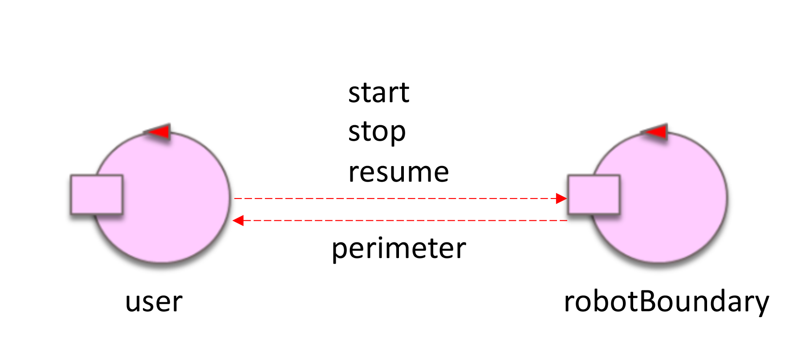
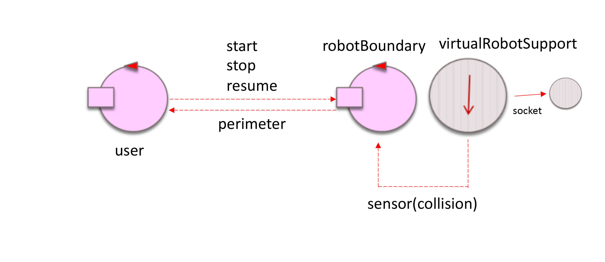
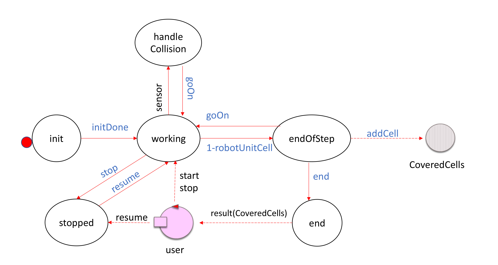
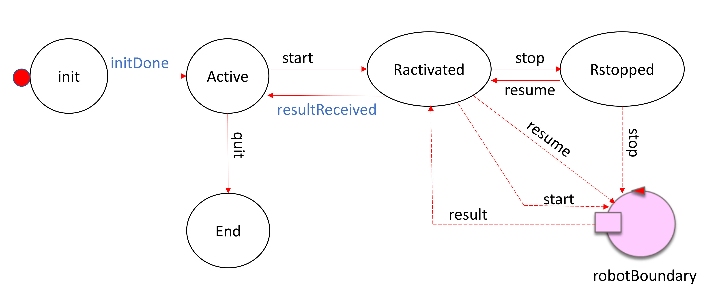

Introduction
Remember our motto:
there is no code without a project, no project
without problem analysis and no problem without requirements.
Requirements
We want define an actor that manages a virtual robot working in a empty, rectangular room. The virtual robot is initially located in the left-upper corner of the room (home location). We want to give to the actor a goal: walk along the boundary of the room.
- actor initially waits for a command start;
- after receiving start, the actor begins its goal-work, by moving along the room boundary measuring its perimeter, until it reaches the home again;
- while doing its goal-work, the actor must be able to react to the commands stop, by 'immediately' stopping the work;
- while stopped, the actor waits for a commands resume to continue its goal-work from the point reached before stopping.
Requirement analysis
room: a defined and confined space in which the virtual robot can move.
home: the starting and finishing point for the robot movement.
comands: set of specific and predefined strings that the actor recognises to perform tasks.
perimeter: measurement of the boundary in terms of RobotUnits.
RobotUnits: 1 RobotUnit is equivalent to a chunk of space that has width and length equal to the Robot's width and length.
Functional TestPlan
the Software System will need to ensure the correct performing of all the commands and mesure exactly the perimeter of the room.
Problem analysis
Logical Architecture:

Abstraction Gap: if we use a programming language that already implements the concept of Actor we have no abraction gap at all, otherwise we will need to implement it ourselves.
Functional TestPlan:
• check that when each command is sendispatched by the User (start, stop, resume) the robotBoundary is actually performing them by changing state.
• check that the robot returns the right perimeter of the room, which we know beforehand.
Product Backlog:
Test plans
Project
1. STRUCTURE
We will need two actors, as shown in the Logical Architecture, representing the User and the RobotBoundary.
The Room will be divided into a matrix of
RobotUnitCells measuring in length and width as the robot.
RobotUnitCell will be an Object that contains its position in the room and has a method to check if it's a boundary cell or not.
The RobotBoundary actor will need an Object to keep track of the cells it covers in terms of RobotUnitsCells, so that at the end we
can check which cells it passed on and be sure they were the boundary of the room. The Object will be called
RobotUnitCellList and will
have a property made of a
List of RobotUnitCells and methods to retrieve informations about these cells, like if they're all boundary cells.
The RobotBoundary will keep stored this object calling it CoveredCells. (Useful to understand behaviour)
We will also use the virtualRobotSupport to keep an abstraction level between the RobotBoundary actor and the actual implementation of the virtual robot.

2. INTERACTION
The interaction between the two actors will need to happen with a
bidirectional channel so that the user can receive the result of the RobotBoundary's measurement.
The messages will al be of type "fire-and-forget", i.e. on message of type dispatch according to our internal standard terminology introduced in:
FirstActor | Towards standards in messaging.
3. BEHAVIOUR
| robotBoundary |
user |

|

|